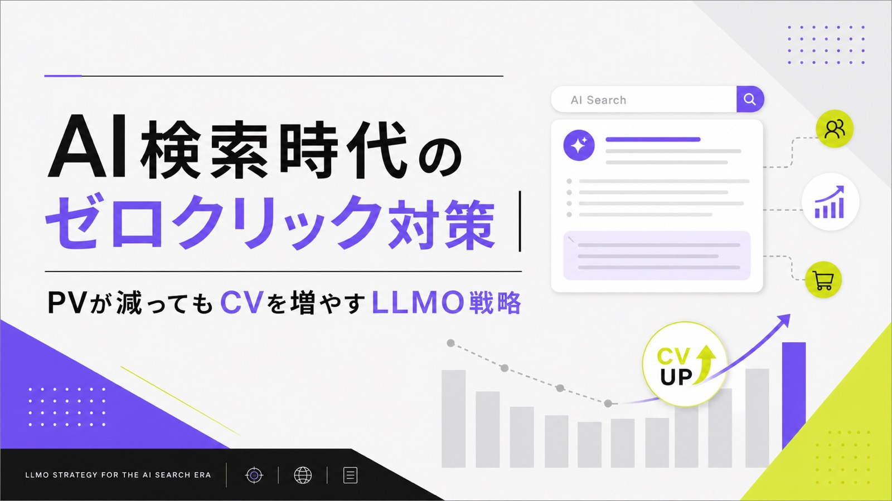
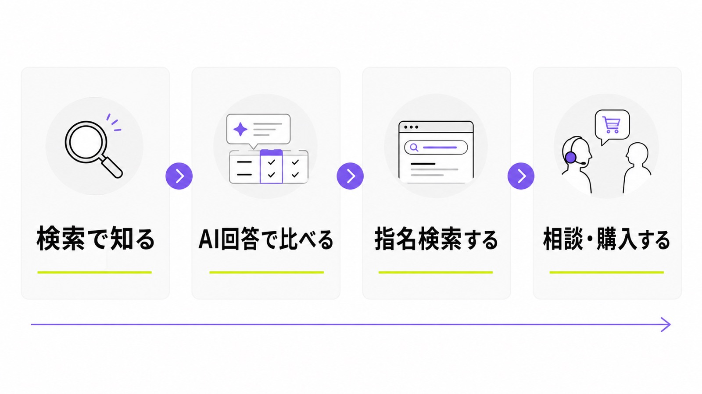
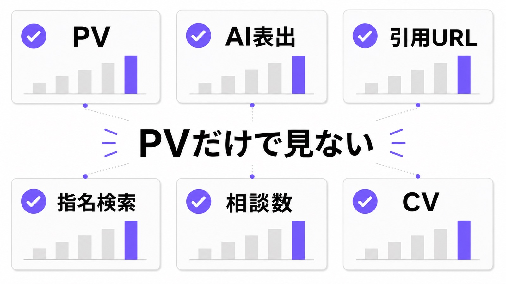
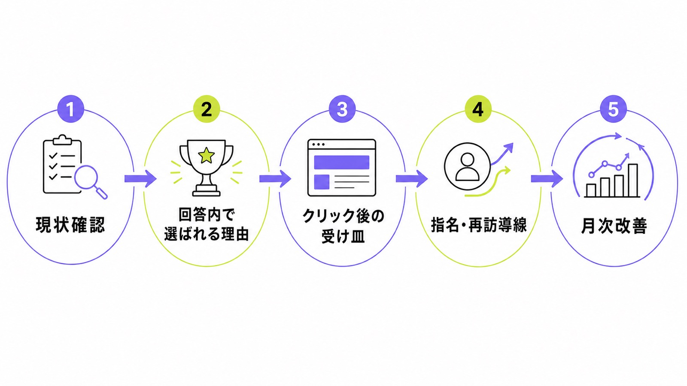

AI検索時代のゼロクリック対策｜PVが減ってもCVを増やすLLMO戦略

AI検索が広がると、ユーザーは検索結果を開く前に、AI回答の中で答えや比較候補を見ます。そのため、これまで通りPVだけを見ていると「アクセスが減ったから失敗」と感じやすくなります。
しかし、ゼロクリック時代でも問い合わせやCVを増やす余地はあります。大事なのは、AI回答の中で自社名が出るか、どんな強みで紹介されるか、その後に指名検索や相談につながるかを見ることです。近いテーマはLLMOのKPIやAI検索流入の計測方法でも解説しています。
この記事では、シート候補の「PVではなく相談数・AI表出をKPIに」という切り口に沿って、専門担当者がいない会社でも始めやすいゼロクリック対策を説明します。
目次

AI検索時代のゼロクリック対策とは
ゼロクリック対策とは、検索結果からクリックされない場面が増えても、AI回答の中で自社を知ってもらい、指名検索、再訪、問い合わせにつなげる考え方です。単にクリックを取り戻す施策ではありません。
ゼロクリックは「クリックされない＝負け」ではない
ゼロクリックという言葉だけ聞くと、サイトに来てもらえないので終わりだと感じるかもしれません。ですが、AI回答の中で会社名、サービス名、料金、強みが読まれたなら、ユーザーはサイトを開く前に自社を知っています。ここで大切なのは、クリック前の接触も見込み客との出会いとして扱うことです。
たとえば「中小企業向けのLLMO会社は？」と聞いたAI回答に自社名が出れば、その場で候補に入ります。その後、ユーザーが会社名で検索したり、料金ページを直接見たり、問い合わせフォームに来たりすることがあります。PVが減っても、AI回答内の見られ方が良くなれば、CVに近い行動は残ります。
AI回答内で比較候補に入ることが入口になる
AI検索では、ユーザーが複数ページを読み比べる前に、AIが候補をまとめます。その候補に入るには、公式サイト、比較記事、FAQ、事例、料金ページに、AIが説明しやすい材料が必要です。会社の強みをふわっと書くだけでは、AIは比較しにくくなります。まず狙うべきは、AI回答の中で比較候補として名前が出る状態です。
候補に入った後は、どんな理由で紹介されるかが重要です。「低予算で始めやすい」「LLMOに特化」「相談しやすい」「記事修正までできる」のような説明が出れば、クリック前から選ばれる理由が伝わります。逆に、名前だけ出ても理由が薄い場合は、サービスページやFAQに具体情報が足りない可能性があります。
“clicked on a traditional search result link in 8% of all visits”
出典：Pew Research Center「What web-browsing data tells us about how AI appears online」

PVが減ってもCVを増やす考え方
PVが減ると不安になりますが、すべてのPVが同じ価値ではありません。AI検索時代は、薄い流入を大量に集めるより、相談に近い質問で自社が見えるかを重視します。
PVだけでなく指名検索と相談数を見る
AI回答で情報を見たユーザーは、その場でクリックせず、後から会社名で検索することがあります。そのため、PVだけを見ると成果を見落とします。確認したいのは、AI回答での自社名表示、引用URL、指名検索、問い合わせ、商談化の流れです。特にBtoBでは、相談数と指名検索を一緒に見ると判断しやすくなります。
たとえば、自然検索PVが少し下がっても、会社名検索や問い合わせが増えているなら、AI回答や比較情報で認知されている可能性があります。逆にPVは多いのに相談が増えない場合は、読者が知りたい料金、範囲、事例、依頼後の流れが足りないかもしれません。数字は1つだけで見ず、流れで見ます。
AI回答で出る言葉を問い合わせ前提で整える
ゼロクリック対策では、「AIが何を説明するか」を意識してページを直します。会社紹介が抽象的だと、AI回答も抽象的になります。見込み客が問い合わせ前に知りたいのは、費用、期間、対応範囲、得意分野、他社との違い、失敗しやすい点です。ここを公式サイトに書くと、AI回答にも選ばれる理由が出やすくなります。
AIMAなら、LLMO特化、月額5万円、相談回数の上限なし、記事作成・記事修正込み、最低契約期間なし、といった具体情報をはっきり出すべきです。このような情報は、人間が見ても安心材料になりますし、AIが会社を説明するときの材料にもなります。きれいな言葉より、比べやすい事実を増やしてください。
クリック後の受け皿を強くする
ゼロクリック対策は、AI回答に出るだけでは終わりません。AI回答を見て興味を持った人がサイトに来たとき、すぐに料金、事例、FAQ、問い合わせ方法が分かる必要があります。クリック数が少ない時代ほど、来てくれた人を迷わせないことが重要です。クリック後は受け皿ページの分かりやすさで差が出ます。
具体的には、サービスページの冒頭に「誰向けか」「いくらか」「何をしてくれるか」を書きます。FAQには、契約期間、追加費用、記事数、修正範囲、相談方法を入れます。関連記事からも料金や診断ページへつなぎます。AI回答で知った人が、すぐ相談できる道を作っておくことがCVにつながります。
“There are no additional requirements to appear in AI Overviews or AI Mode”

AI回答で選ばれやすくするLLMO施策
AI回答に出るには、AIが読み取りやすい情報をそろえる必要があります。難しい技術よりも、会社情報、サービス内容、FAQ、事例を正しくつなぐことが先です。
会社情報とサービス情報を一枚岩にする
AIは、会社概要、サービスページ、記事、FAQ、外部掲載を見比べながら回答を作ります。ページごとに料金や対応範囲が違うと、AIも人も迷います。まずは正式社名、サービス名、対象企業、料金、契約期間、対応範囲、強みをそろえます。サイト全体で同じ説明が出ている状態を作ることが基本です。
会社概要だけに情報を置くのではなく、サービスページ、料金ページ、FAQ、関連記事を内部リンクでつなぎましょう。たとえば、LLMOの基本を説明する記事からLLMO対策の記事や無料LLMO診断へつなぐと、読者もAIも関連情報を追いやすくなります。
比較される理由と向かない条件も書く
AI回答では「おすすめ会社」「比較」「費用」「向いている会社」のような形で紹介されます。そのとき、良いことだけを書いているページより、向いている会社と向かない会社が分かるページのほうが比較しやすくなります。自社の強みだけでなく、選ぶ判断材料を出すことが大切です。
AIMAなら、低予算でLLMOを始めたい会社、記事作成と修正をまとめて任せたい会社、相談しながら進めたい会社に向いています。一方で、大規模な広告運用や大規模開発を一括で任せたい場合は別の支援が合うこともあります。このように書くと、ユーザーもAIも誤解しにくくなります。
FAQと事例で不安を先に消す
ゼロクリック時代のFAQは、単なる補足ではありません。AIが回答に使いやすい短い答えを置く場所です。「月5万円で何が含まれますか？」「最低契約期間はありますか？」「記事作成は何本までですか？」「SEO会社との違いは？」のように、問い合わせ前の疑問へ先に答えます。FAQは不安を消す入口になります。
事例や実績も、数字だけではなく背景を書きます。どんな会社が、何に困っていて、何を直して、どう変わったのかを短く整理します。AIは具体的な文脈がある情報を説明しやすくなります。FAQの作り方はLLMOに強いFAQの作り方も参考にしてください。
“OAI-SearchBot is used to surface websites in search results”

ゼロクリック対策の実務手順
ゼロクリック対策は、難しい分析から始める必要はありません。まずは、AI回答で自社がどう見えているかを表に残し、足りない情報をページに足すことから始めます。
まず現状のAI回答を記録する
最初に、見込み客が聞きそうな質問を10個ほど作ります。「中小企業向けのLLMO会社は？」「AI検索対策を月額で頼むなら？」「AI検索で問い合わせを増やすには？」のように、費用、比較、地域、悩みを混ぜます。ChatGPT、Gemini、Perplexity、AI Overviewsで試し、自社名と競合名の出方を記録します。
表には、質問、AI名、自社名の有無、引用URL、競合名、紹介された理由、気になる誤情報、次に直すページを入れます。最初から完璧なツールを使わなくても、スプレッドシートで十分です。毎月同じ質問で見ると、変化が分かります。詳しい見方はAI検索の競合分析も参考になります。
既存ページを直して新規記事を足す
記録したら、AI回答に出てほしい情報を既存ページへ足します。料金が出ないなら料金ページ、比較理由が弱いならサービスページ、よくある不安が出るならFAQ、導入後のイメージが弱いなら事例を直します。いきなり新規記事を量産するより、CVに近いページの修正から進めるほうが早いです。
そのうえで、足りない検索意図に合わせて新規記事を作ります。たとえば「ゼロクリック対策」「AI検索のKPI」「LLMOの費用」のような記事は、問い合わせ前の理解を助けます。記事内からサービス、診断、料金、FAQへ自然にリンクすれば、AIにも読者にもサイト全体の意味が伝わりやすくなります。
月次でAI表出・引用・CVを見直す
AI回答は日によって変わるため、1回の確認だけで判断しないでください。月1回、同じ質問で、自社名が出たか、引用URLが出たか、競合が誰か、問い合わせ内容が変わったかを見ます。大事なのは、順位だけではなく相談につながる変化を見ることです。
月次確認では、GA4やGSCで見える流入、指名検索、問い合わせフォームの内容も見ます。AI回答に出たあと、会社名検索が増えているなら、クリック前の接触が効いている可能性があります。逆に、AI回答に出ても相談が増えないなら、受け皿ページやCTAを直します。
| 見る数字 | 意味 | 直す場所 |
|---|---|---|
| AI表出 | AI回答に自社名が出たか | 会社概要、サービスページ、比較記事 |
| 引用URL | AIがどのページを根拠にしたか | 引用された記事、FAQ、料金ページ |
| 指名検索 | AI回答を見た後に会社名で探された可能性 | トップページ、サービスページ、会社概要 |
| 相談数・CV | 問い合わせや資料請求につながったか | CTA、フォーム、料金、事例 |
AIMAならゼロクリック時代のLLMOを小さく始められる
ゼロクリック対策は、調査だけで終わると意味が薄くなります。AI回答の見え方を確認し、ページを直し、記事を足し、毎月見直すところまで続ける必要があります。
月5万円で相談・記事作成・修正まで回せる
AIMAは、LLMOに特化した支援を月額5万円で提供しています。AI回答の確認、競合との見え方の比較、既存ページの修正、FAQ追加、記事作成、記事リライトまで、毎月できる範囲で進めます。高額な診断だけで止めず、直すところまで進めることを重視しています。
ゼロクリック対策では、記事を増やすだけでなく、CVに近いページを整えることが大切です。AIMAでは、読者がAI回答で知った後に見るサービスページ、料金、FAQ、問い合わせ導線も一緒に見ます。相談回数の上限がないため、小さな疑問もその都度確認できます。
最低契約期間なしで小さく試せる
AI検索対策は新しい領域なので、いきなり大きな契約を結ぶのが不安な会社も多いはずです。AIMAは最低契約期間がないため、まず数か月だけ、AI回答の現状確認、既存ページ修正、記事作成を試せます。最初は小さく始めて続けるほうが失敗しにくいです。
「PVは減っているが問い合わせを増やしたい」「AI回答に競合だけが出る」「自社の強みがAIに伝わっていない」と感じる場合は、まず無料LLMO診断をご利用ください。自社がAI検索でどう見えているかを確認し、直す優先順位を整理できます。
AI検索時代のゼロクリック対策に関するよくある質問
PVが減ったらSEO記事はやめるべきですか？
やめる必要はありません。ただし、記事の役割は変わります。PVだけを集める記事ではなく、AI回答に引用される材料、指名検索につながる説明、問い合わせ前の不安を消す情報として記事を見直してください。古い記事は、料金、FAQ、事例、内部リンクを追加すると使いやすくなります。
ゼロクリック対策は何から始めればいいですか？
まずはAI回答の記録から始めます。見込み客が聞きそうな質問を10個ほど作り、自社名、競合名、引用URL、紹介理由を表に残してください。その後、会社情報、料金、事例、FAQを優先して直します。最初から大きなツールを入れなくても、手作業で十分に始められます。
まとめ
AI検索時代のゼロクリック対策では、クリックやPVだけを追うと成果を見落とします。AI回答の中で自社名が出るか、どんな理由で紹介されるか、その後に指名検索や相談へ進むかを見ることが大切です。
まずはAI回答の現状を記録し、会社情報、サービスページ、料金、FAQ、事例を整えます。AIが比較しやすく、人間も相談しやすい情報を増やせば、PVが減ってもCVにつながる道を作れます。
AIMAは、LLMO特化、月額5万円、相談無制限、記事作成・修正込み、最低契約期間なしで、ゼロクリック時代のAI検索対策を支援します。まずは無料LLMO診断またはお問い合わせからご相談ください。